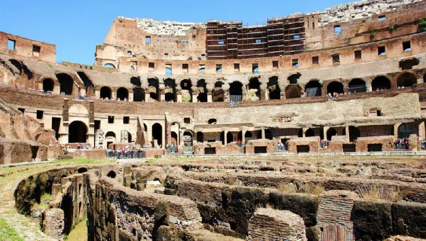
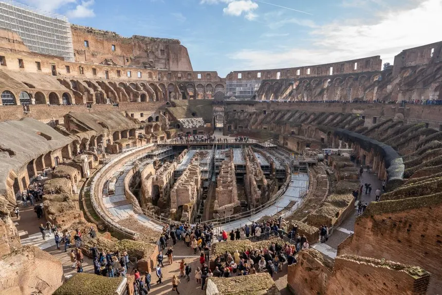

Coliseo Romano
Publicado por Ignacio Bruno en Octubre de 2025

El Coliseo, también conocido como Anfiteatro Flavio, fue inaugurado en el año 80 d.C. y podía albergar hasta 50.000 espectadores. Allí se realizaban combates de gladiadores, cacerías de animales exóticos, ejecuciones públicas y espectáculos recreativos, incluyendo simulacros de batallas navales que se realizaban inundando la arena con agua.
Este imponente edificio es un símbolo de la ingeniería y la arquitectura romana, construido con piedra caliza, ladrillo y hormigón. A pesar de los terremotos, incendios y saqueos sufridos a lo largo de los siglos, el Coliseo sigue siendo uno de los monumentos más representativos del Imperio Romano y un ícono de Roma.

Historia
La construcción del Coliseo comenzó durante el mandato del emperador Vespasiano alrededor del año 72 d.C. y fue completada por su hijo Tito en el año 80 d.C. Su nombre original, “Anfiteatro Flavio”, proviene de la dinastía de emperadores Flavios. La inauguración fue celebrada con juegos que duraron más de 100 días, donde participaron miles de gladiadores y animales salvajes.
A lo largo del Imperio, el Coliseo fue el centro del entretenimiento romano y un espacio donde los emperadores ofrecían espectáculos gratuitos para ganarse el apoyo del pueblo. Tras la caída del Imperio Romano, el anfiteatro fue abandonado, utilizado como cantera y refugio, hasta su restauración durante el Renacimiento.
Arquitectura
El Coliseo tiene una forma elíptica, con 189 metros de largo, 156 de ancho y una altura cercana a los 50 metros. Contaba con un avanzado sistema de pasillos, escaleras y salidas que permitían la entrada y evacuación rápida de decenas de miles de personas, demostrando el ingenio arquitectónico de Roma.
En su interior, la arena estaba hecha de madera cubierta con arena, bajo la cual se encontraba el “hipogeo”, un complejo sistema subterráneo de túneles y jaulas utilizado para mover animales, gladiadores y decorados durante los espectáculos.
Turismo
En la actualidad, el Coliseo Romano es el monumento más visitado de Italia y uno de los sitios arqueológicos más reconocidos del mundo. Cada año recibe millones de turistas que recorren sus gradas y galerías, imaginando los espectáculos que alguna vez tuvieron lugar allí.
En 1980 fue declarado Patrimonio de la Humanidad por la UNESCO y, al igual que el Taj Mahal, fue elegido en 2007 como una de las Nuevas Siete Maravillas del Mundo. Por la noche, su iluminación resalta las formas del anfiteatro, convirtiéndolo en una de las vistas más emblemáticas de Roma.
